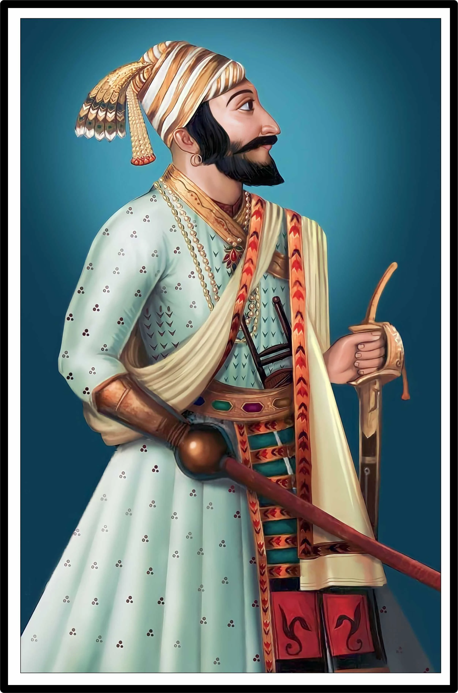

Shivaji Shahaji Bhonsale, born on
19 February 1630 – 3 April 1680 was an Indian ruler and a member of
the Bhonsle dynasty. Shivaji inherited a fiefdom (Marathi: Jagir) from his
father who served as a retainer for the Sultanate of Bijapur, which later
formed the genesis of the Maratha Kingdom. In 1674, he was formally
crowned the Chhatrapati of his realm at Raigad Fort. Shivaji offered
passage and his service to the Mughal emperor Aurangzeb to invade the
declining Sultanate of Bijapur.
After Aurangzeb's departure for the
north due to a war of succession, Shivaji conquered territories ceded by
Bijapur in the name of the Mughals. Following his defeat at the hands of
Jai Singh I in the Battle of Purandar,
Shivaji entered into vassalage with the Mughal empire, assuming the
role of a Mughal chief.
During this time Shivaji also wrote a series of letters apologising to
Mughal emperor Aurangzeb for his actions and requested additional honors
for his services. He was later conferred with the title of Raja by the
emperor.
He undertook military expeditions on behalf of the Mughal Empire for a
brief duration. In 1674,
Shivaji was crowned as the king despite opposition from local
Brahmins.
Shivaji employed people of all castes and religions, including Muslims and
Europeans, in his administration and armed forces.
Over the course of his life, Shivaji engaged in both alliances and
hostilities with the Mughal Empire, the Sultanate of Golconda, the
Sultanate of Bijapur and the European colonial powers. Shivaji's military
forces expanded the Maratha sphere of influence, capturing and building
forts, and forming a Maratha navy.
Shivaji's legacy was revived by Jyotirao Phule about two centuries after
his death.
Later on, he came to be glorified by Indian nationalists such as Bal
Gangadhar Tilak, and appropriated by Hindutva activists.
# Combat with Afzal Khan.
# Siege of Panhala.
# Battle of Pavan Khind.
# Conflict with the Mughals.
# Attacks on Shaista Khan and Surat.